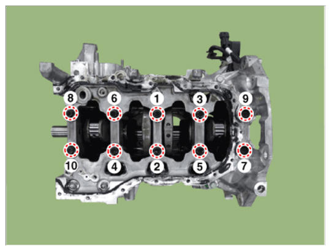

Repair Procedures: Reassembly
NOTE:
- Thoroughly clean all parts to assembled.
- Before installing the parts, apply fresh engine oil to all sliding and rotating surfaces.
- Always use new gaskets, O-ring and oil seals.
- Install the crankshaft position sensor wheel (A).
Tightening torque:
12.7 - 13.7 N.m (1.3 - 1.4 kgf.m, 9.4 - 10.1 lb-ft)
- Install the main bearing.NOTE:
- When installing the crankshaft upper bearings, the upper bearings should fit for each journal.
[No. 2, No. 4 Journal Upper Bearing]
[No. 1, No. 3, No. 5 Journal Upper Bearing]
- Install the thrust bearings.
Install the 2 thrust bearings (A) on both sides of the No. 4 journal of the cylinder block with the oil groove facing out.
- Place the crankshaft (A) on the cylinder block.NOTE:
- When exchanging the crankshaft and short engine, apply if the pilot bearing is not assembled.[DCT Only]
- When press fitting the pilot bearing, press fit so that the load is applied only to the outer race of the pilot bearing.
- if load is applied to the seal and inner race, the component or bearing inside may be damaged.
- Press-fit depth of the pilot bearing (A): 1.5 - 2.0 mm (0.0591 - 0.0787 in) from the end of the crankshaft.
- Install the lower crankcase.
- Make sure to remove hardened sealant, foreign matters, oil, dust, moisture on the sealing face of the liquid gasket of the lower crankcase.
Spray the cleaner on the sealing surface and wipe it off with a clean cloth.
- Install the new O-ring (A) on the cylinder block.
- Apply liquid sealant on lower crankcase. Then, assemble the part within 5 minutes of applying sealant.
Width: 2.5 - 3.5 mm (0.0984 - 0.1378 in)
Specification: MS721-40AA or AAO/above.
- Tighten the crankshaft bearing cap bolts several times according to the tightening sequence shown below.
Tightening torque:
27.5 - 31.4 N.m (2.8 - 3.2 kgf.m, 20.3 - 23.1 lb-ft) +118-122°

Courtesy of HYUNDAI MOTOR AMERICANOTE:- Always use new bearing cap bolts.
- Tighten the lower crankcase mounting bolts several times according to the tightening sequence shown below.
Tightening torque:
18.6 - 23.5 N.m (1.9 - 2.4 kgf.m, 13.7 - 17.4 lb-ft)
- Install the rear caps (A).NOTE:
- When installing the rear cap, make sure that the cylinder block installed surface and the rear cap installed surface are aligned.
- Check that the crankshaft turns smoothly.
- Make sure to remove hardened sealant, foreign matters, oil, dust, moisture on the sealing face of the liquid gasket of the lower crankcase.
- Check the crankshaft end play.
- Install the piston and connecting rod assemblies.
(Refer to Cylinder Block - "PISTON AND CONNECTING ROD ")
- Assemble the other parts in the reverse order of disassembly.
Information
- In case the crankshaft is replaced with a new one, select the proper connecting rod bearing according to the pin journal mark on the crankshaft.
- Connecting rod bearing selection
(Refer to Cylinder Block - "PISTON AND CONNECTING ROD ")